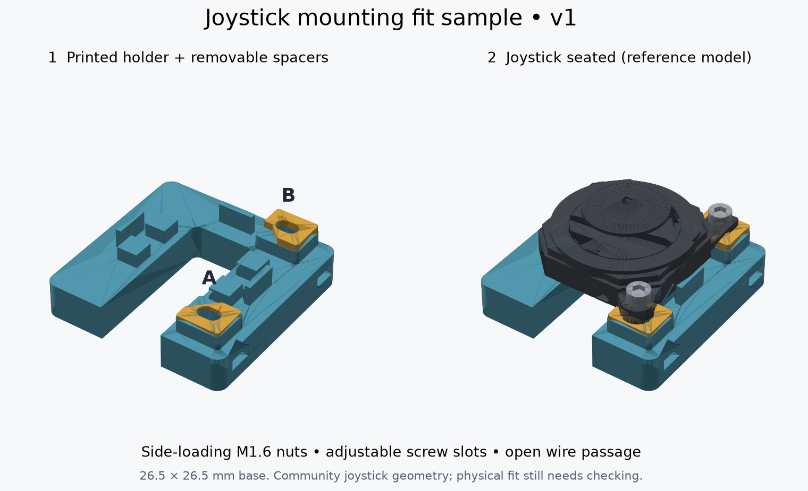

CODEX MICRO · MECHANICAL FIT SAMPLE · V1
This small holder supports the joystick body, secures its two mounting tabs with screws, and leaves space for the four wires.
Start with a dry fit on your desk. Keep the existing keyboard plate. We’ll decide its mounting changes after this sample fits your real joystick.

Download print files + guide Reference assembly STEP
| Part | Layers | Quantity |
|---|---|---|
| Holder STL | 0.2 mm | 1 |
| A spacer · 0.5 mm STL | 0.1 mm | 1 |
| B spacer · 1 mm STL | 0.1 mm | 1 |
Use your existing PETG. Any color works, including clear. PLA also works for this fit sample. Print at 100% scale, flat side down, 4 walls, 100% infill, supports off. The files are already in print orientation. The holder is only 26.5 × 26.5 mm.
Only if the starting spacers leave a gap or make the housing rock: A · 1 mm and B · 0.5 mm. Keep A at A and B at B. Do not tighten across an unsupported gap.
You can do this first check without buying the screws. Send a top photo and a side photo once it is seated.
The sample uses two M1.6 × 8 mm screws and two M1.6 nuts. These smaller heads clear the modeled joystick housing. The keyboard case screws are too large.
| Hardware | Specification / product link |
|---|---|
| 2 screws | M1.6 × 8 mm DIN 912 socket head · 3 mm head diameter · 0.35 mm pitch |
| 2 hex nuts | M1.6 DIN 934 · 3.2 mm across flats · 1.3 mm thick |
| Driver | 1.5 mm hex key for the specified screws; tweezers help place the nuts. |
Links identify the specified parts; availability and delivery aren’t verified. Equivalent fasteners with the same dimensions are suitable.
The large open passage beneath the joystick gives access to all four solder pads. The wires can turn downward toward the existing hole in the top plate. We’ll check that route with your actual wire thickness before final plate mounting.
The printable parts are valid single CAD solids. The holder and starting spacers clear the community joystick model. The screw slots accommodate both documented hole layouts; modeled screws, heads and nuts clear the assembly. Your printer’s fit, the actual joystick and the full thumb-cap motion still need checking.
The body sits 7 mm above the holder underside. Final integrated height, plate attachment and neighboring keycap clearance will be checked after the sample fits. This base sits above the plate; it does not press into the old recess. Do not drill or glue the top plate yet.
The reference model simplifies the thumb cap and is not a manufacturer-certified drawing. Full notes and sources · CAD checks · Editable CadQuery source.